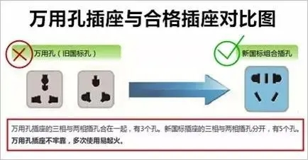
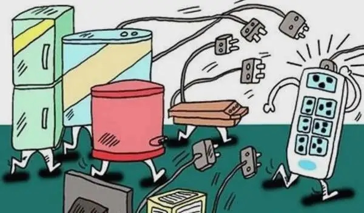
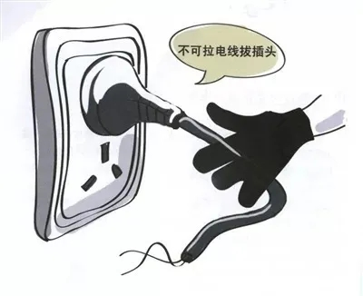
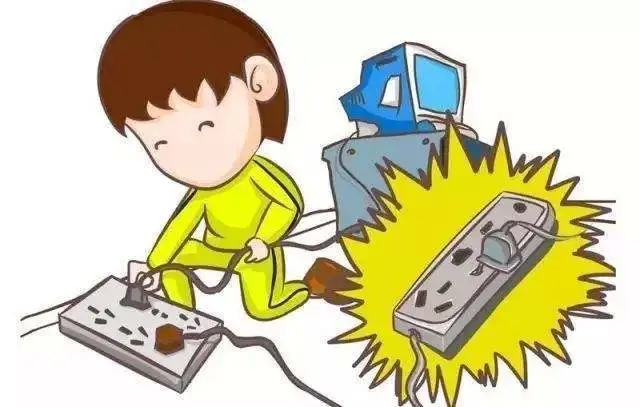
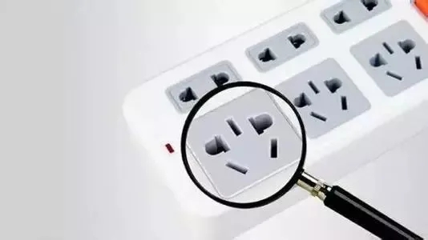

插座是人们生活中必备的电器配件之一，随着家用电器的不断增多，插座的使用也不断增加。家中的插座一旦出现异常或老化等现象，将有很大安全隐患！关于插座的这些事儿，你一定要知道...
一、如何判断插座是否老化？
看外观
经常使用或者经常拖拽，容易引起插座硬件设施的损坏，如果出现破裂，粉尘进入电路引起短路，容易发生火灾。
看电源线
电源线在使用时间过长之后容易出现“露铜”现象，这种现象容易引起短路。
看电器插孔
电器插孔内部有两个铜片，在经常插拔过程当中，铜片会弹性变弱，容易引起插线板的虚接或者接触不良现象，也就是插不紧的现象，这样容易引起电弧或者电火花。
二、生活中怎样正确使用插座？
购买新国标插座
一定要购买新国标插座，不要选购国家禁止生产的万用孔插座。新国标插座的三相插孔与两相插孔分开，有5个孔；万用孔插座的三相插孔与两相插孔合在一起，有3个孔。
避免“小马拉大车”
插座都有额定电流，不能超负荷使用，否则插座会发热、损坏电器甚至引起火灾。特别注意，不要将空调、微波炉等大功率家用电器插在额定电流值小的插座上使用。
勿拉拽电源线
拔插头时不要拽电源线，这样容易把电源线与插头连接的部位拽断，从而发生短路、漏电，引发火灾和触电事故。
出现异常或老化现象时要及时更换
当插座出现温度过高、打火、插头与插座接触不良、插头过松或过紧等现象时，应及时停止使用并进行更换。
切忌改变插头尺寸与形状
这样会导致插头与插座接触不良，损坏家用电器以及插头插座,甚至引起火灾。
三、如何挑选插座？
第一步：掂重量
符合国家标准的插座内部所用铜线多、铜片厚，塑料壳严实，因此分量较重，而不合格插座偷工减料,明显会感觉轻很多。
第二步：听声音
可反复几次试按插座开关，合格插座开合自如且声音清脆，不合格插座则手感生硬、易卡滞。
第三步：试手感
合格插座不仅每位孔的插拔手感适中有弹性，且各插孔的插拔手感一致；不合格插座的插拔力度则过松或过紧，弹性差且易松动，每个孔也能明显感觉手感不同。
第四步：看硬度
合格插座的电源线手感软硬适中，与插座连接扎实可靠，而不合格插座的电源线手感较软，与插座连接不牢固，极易拉脱。